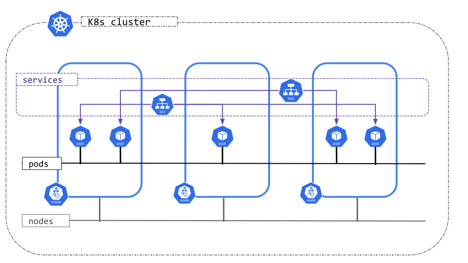

Kubernetes
MLOps YA.Camp 2025
Предыстория
- VM, кластера виртуальных машин
Изоляция приложений в различные виртуальных машины - namespaces, cgroups
Механизмы изоляции процессов ядра Linux - LXC, Docker
Средства контейнеризации на основе Linux - Kubernetes
Кластерное решение по управлению контейнерами
Основные спецификации
- OCI — Open Container Initiative
- runtime-spec: стандарт конфигурации, жизненного цикла и выполнения контейнеров
- image-spec: стандарт образов контейнеров
- distribution-spec: стандарт распространения образов контейнеров
- CRI — Container Runtime Interface: стандарт инструментария управления контейнерами
- CNI — Container Network Interface: стандарт управления сетью и обеспечения сетевой связности контейнеров
- CSI — Container Storage Interface: стандарт доступа к системам хранения данных
Устройство и архитектура

Варианты Kubernetes
Кроме основной поставки, существует также множество различных вариаций Kubernetes:
Коммерческие дистрибутивы:
- Red Hat OpenShift: дистрибутив со своей встроенной системой сборки и повышенным фокусом на безопасность
- VMWare Tanzu Kubernetes Grid: дистрибутив с интеграцией с продуктами виртуализации VMWare
- Rancher: дистрибутив с фокусом на работу в гибридных облаках
- и т.д.
Managed Kubernetes от облачных провайдеров:
- GKE (Google Cloud)
- EKS (Amazon Web Services)
- AKS (Microsoft Azure)
- и т.д., свой вариант встречается у многих крупных облачных провайдеров
Минималистичные дистрибутивы:
- Minikube: полноценная, кроссплатформенная, простая в установке поставка от разработчиков Kubernetes, выполняется на VM
- k3s: облегчённый вариант с урезанным функционалом для IoT-устройств, выполняется на VM
- MicroK8s: облегчённая поставка для IoT-устройств, поставляется в Snap
- и т.д.
Объекты Kubernetes
Ожидаемое состояние кластера Kubernetes полностью описано множеством объектов, существующих на нём. Абсолютно всему в кластере, будь то ваше приложение, балансировщик нагрузки, файл конфигурации или узел самого кластера, соответствует некий объект.
Любой объект Kubernetes имеет описание в формате YAML. Для создания нового объекта необходимо передать кластеру его описание, и любой объект может быть запрошен у кластера — тогда вы аналогично получите его YAML-описание. Ниже приведён простейший объект типа Namespace:
В описании объекта существует четыре обязательных поля:
apiVersion: версия API Kubernetes, которой соответствует описание объекта.kind: тип объекта.metadata: словарь метаинформации объекта.spec: словарь спецификации — ожидаемого состояния объекта.
При запросе объекта с кластера также будет добавлено пятое поле status, в котором содержится текущее состояние объекта. При создании объекта данное поле не нужно, и даже если оно присутствует, его содержимое будет просто проигнорировано.
Workload
Объекты рабочей нагрузки (Workload) являются наиболее полезными и часто используемыми объектами Kubernetes. Именно они используются для запуска практически любого приложения, которое вы можете захотеть запустить на вашем кластере.
В основе всех объектов рабочей нагрузки лежит под (Pod). Под — это некоторое множество контейнеров, управляемых Kubernetes и объединённых общей изолированной средой. Все контейнера одного пода всегда запускаются на одном узле, имеют общий жизненный цикл, используют общий сетевой интерфейс и могут использовать общие дисковые ресурсы. Любые другие объекты рабочей нагрузки создают управляемые ими поды и определяют их поведение.
Поды, как и лёгшие в их основу Docker-контейнеры, по определению stateless. С точки зрения кластера поды сами по себе не имеют никакой ценности, и могут быть в любой момент удалены, перезапущены, перенесены на другой узел (без переноса каких-либо хранившихся внутри данных), и т.д. Поэтому никогда нельзя полагаться на хранимое в поде состояние, на любые изменения, сделанные внутри пода в процессе его работы. Для обеспечения персистентности в Kubernetes существуют отдельные специальные типы объектов.
Минимальный под выглядит так:
Pod
apiVersion: v1 # версия API
kind: Pod # тип объекта
metadata:
name: nginx-pod # имя пода
namespace: newnamespace # пространство имён
labels: # метки
app: webserver
spec:
containers: # список контейнеров
- name: nginx-container # имя контейнера
image: nginx # образ
imagePullPolicy: Always # когда скачивать образ
envFrom: # объявление переменных
- configMapRef:
name: nginx-config
readinessProbe: # проверка готовности пода
exec:
command:
- cat
- /data/file.txt
livenessProbe: # проверка работоспособности пода
httpGet:
path: /
port: 80
ports: # открытые порты
- containerPort: 80
resources: # доступные ресурсы
requests:
cpu: "0.5"
memory: "100Mi"
limits:
cpu: "1"
memory: "200Mi"
volumeMounts: # монтирование томов в контейнер
- name: data
mountPath: /data
initContainers: # список контейнеров инициализации
- name: init-container
image: busybox
imagePullPolicy: IfNotPresent
env:
- name: STRING
value: "ready ready"
command: ["sh", "-c", "echo $(STRING) > /data/file.txt"]
resources: {}
volumeMounts:
- name: data
mountPath: /data
restartPolicy: Always # когда перезапускать под
volumes: # тома
- name: data
emptyDir: {}ReplicaSet
apiVersion: apps/v1
kind: ReplicaSet
metadata:
name: nginx
labels:
app: webserver
spec:
replicas: 3 # количество реплик пода
selector: # селектор, определяющий управляемые поды
matchLabels:
app: webserver
template: # шаблон пода
metadata:
labels:
app: webserver
spec:
containers:
- name: nginx
image: nginxDeployment
apiVersion: apps/v1
kind: Deployment
metadata:
name: nginx
labels:
app: webserver
spec:
replicas: 3 # количество реплик
selector:
matchLabels:
app: webserver
strategy: # стратегия обновления
rollingUpdate:
maxSurge: 1
maxUnavailable: 1
type: RollingUpdate
template:
metadata:
labels:
app: webserver
spec:
containers:
- name: nginx
image: nginxStatefulSet
Job
apiVersion: batch/v1
kind: Job
metadata:
name: pi
spec:
template:
spec:
containers:
- name: pi
image: perl:5.34.0
command: ["perl", "-Mbignum=bpi", "-wle", "print bpi(2000)"]
restartPolicy: Never
completions: 5 # количество успешных выполнений
parallelism: 2 # количество одновременных запусков
backoffLimit: 6 # допустимое количество проваловCronJob
Networking
Каждый под — отдельный виртуальный узел со своим сетевым интерфейсом.
Внутри кластера существует единая сеть, и каждый под имеет собственный IP-адрес внутри этой сети.
Service
apiVersion: v1
kind: Service
metadata:
name: nginx
spec:
type: ClusterIP # тип Service
selector: # селектор, определяющий целевые поды для трафика
app: webserver
ports: # открытые порты
- name: "http" # название
protocol: TCP # протокол TCP/UDP/SCTP
port: 80 # открытый порт сервиса
targetPort: 80 # целевой порт подаIngress
ConfigMap
apiVersion: v1
kind: Pod
metadata:
name: nginx-pod
labels:
name: webserver
spec:
containers:
- name: nginx-container
image: nginx
env:
- name: NGINX_ENTRYPOINT_QUIET_LOGS
valueFrom:
configMapKeyRef:
name: nginx-config
key: nginx_entrypoint_quiet_logs
ports:
- containerPort: 80
volumeMounts:
- name: config
mountPath: "/etc/nginx/conf.d"
readOnly: true
volumes:
- name: config
configMap:
name: nginx-config
items:
- key: "nginx_conf"
path: "default.conf"Secret
apiVersion: v1
kind: Secret
metadata:
name: certs
type: Opaque
data:
ca: >-
LS0tLS1CRUdJTiBDRVJUSUZJQ0FURS0tLS0tCk1JSUJkakNDQVJ5Z0F3SUJBZ0lSQU5aWXNXb3JrTXFjNzNpQ3phWVZKcEl3Q2dZSUtvWkl6ajBFQXdJ
d0R6RU4KTUFzR0ExVUVDaE1FYm1sc01UQWdGdzB5TXpFeU1qZ3dOakUxTVRGYUdBOHlNVEl6TVRJd05EQTJNVFV4TVZvdwpEekVOTUFzR0ExVUVDaE1F
Ym1sc01UQlpNQk1HQnlxR1NNNDlBZ0VHQ0NxR1NNNDlBd0VIQTBJQUJHaXNUSThGCnNZMExuWGFTOFFKSEh0SUlvRkE2VzVUZmg2ckdvc1A1d1k2bHhx
STNJQjNESTE4b0xWZ2h2cnVLVCtIaDFBK1AKeVVNYmFMLzRmSnFpbVk2alZ6QlZNQTRHQTFVZER3RUIvd1FFQXdJQ0JEQVRCZ05WSFNVRUREQUtCZ2dy
QmdFRgpCUWNEQVRBUEJnTlZIUk1CQWY4RUJUQURBUUgvTUIwR0ExVWREZ1FXQkJRdTJyMWFNbkw3UFl4cU1ybmtSZXdkCmZ0a0hLREFLQmdncWhrak9Q
UVFEQWdOSUFEQkZBaUJFRnlpRUFaY2FKVW96SzZzdFpzYVdOa2N2dVBSRFNXR3QKU2M1TTJ3NXFoUUloQU90NEJxb09uc2JSaWhjQ1FLOE5VNnJRWW80
VmRYRUJQVEgzMTBLZ0s1cXcKLS0tLS1FTkQgQ0VSVElGSUNBVEUtLS0tLQo=
cert: >-
LS0tLS1CRUdJTiBDRVJUSUZJQ0FURS0tLS0tCk1JSUJ1akNDQVdDZ0F3SUJBZ0lRVEZKL3ZtRStuNjlvSy9HQ0xDVGRwekFLQmdncWhrak9QUVFEQWpB
UE1RMHcKQ3dZRFZRUUtFd1J1YVd3eE1DQVhEVEl6TVRJeU9EQTJNVFV4TVZvWUR6SXhNak14TWpBME1EWXhOVEV4V2pBUApNUTB3Q3dZRFZRUUtFd1J1
YVd3eU1Ga3dFd1lIS29aSXpqMENBUVlJS29aSXpqMERBUWNEUWdBRVZHcjE4aXVBCkJBUDE4Wnd4M1NuZURZNEhBZ1NSK3VjQ3lXRGR1dHBFYVI5TURH
bmNjNWwzckZ6WW9CM2FYcWFnclp4aC9BSDYKdERrQzc0Ung3Y3d0VnFPQm16Q0JtREFPQmdOVkhROEJBZjhFQkFNQ0JhQXdFd1lEVlIwbEJBd3dDZ1lJ
S3dZQgpCUVVIQXdFd0RBWURWUjBUQVFIL0JBSXdBREJqQmdOVkhSRUVYREJhZ2lKcGJtZHlaWE56TFc1bmFXNTRMV052CmJuUnliMnhzWlhJdFlXUnRh
WE56YVc5dWdqUnBibWR5WlhOekxXNW5hVzU0TFdOdmJuUnliMnhzWlhJdFlXUnQKYVhOemFXOXVMbWx1WjNKbGMzTXRibWRwYm5ndWMzWmpNQW9HQ0Nx
R1NNNDlCQU1DQTBnQU1FVUNJUUN4Nk5NYQp6TDJ5SXVTZnZLekZRMThqMWdRd0FzaEVnYmdSZ1Myd2ZZc0MrUUlnTFZ0bHJ6NjBIbGhISGt4eERYbFVV
N1RyClU2NkdBcWZMRXUxakl0dVN0c009Ci0tLS0tRU5EIENFUlRJRklDQVRFLS0tLS0K
key: >-
LS0tLS1CRUdJTiBFQyBQUklWQVRFIEtFWS0tLS0tCk1IY0NBUUVFSUJhWVVQNGZLRExxaFYxUU44aElNNWthMCt2QVVQRTVYRXA6VzgvMGJKUUdvQW9H
Q0NxR2NNNDkKQXdFSG9VUURRZ1FFVkdyMThpdUFCQVAxOFp3eDNTbmVEWTRIQWdTUit1Y0N5V0RkdXRwRWFSOU1EO25jYzVsMwpyRnpZb0IzYVhxYWdy
WnhoL0FINnREa0M3NFJ4N2N3dFZnPT0KLS0tLS1FTkQgRUMgUFJJVkFURSBLRVktLS0tLQo=PersistentVolume
Minikube
Простейшей для установки и запуска в целях обучения поставкой Kubernetes является Minikube.
Minikube поставляется в виде одного исполняемого файла, работает на Linux, Windows и macOS, для работы требует только наличия среды виртуализации (KVM, Hyper-V, HyperKit и др.)
Для установки достаточно скачать исполняемый файл.
Часто используемые команды:
minikube start— запускает Kubernetesminikube start --driver=virtualbox --cpus=4 --memory=16gb --disk-size=32gb— + параметры запуска (VM VirtualBox, 4 vCPU, 16GB RAM, 32GB storage)
minikube stop— останавливает Kubernetesminikube pause— приостанавливает Kubernetesminikube unpause— продолжает работу после приостановкиminikube kubectl -- <command>— встроенный клиент kubectlminikube dashboard— запускает и даёт доступ к плагину dashboard, позволяющему просматривать состояние кластера через браузерminikube addons— управление аддонами Minikubeminikube addons list— выводит список доступных аддоновminikube addons enable <name>— включает аддонminikube addons disable <name>— выключает аддон- рекомендуется установить хотя бы следующие аддоны:
dashboard,ingress,storage-provisioner
minikube config— управление настройкамиminikube config get <name>— выводит значение параметра настройкиminikube config set <name> <value>— устанавливает значение параметра настройкиminikube config view— выводит все установленные нестандартные настройки
minikube ip— выводит IP-адрес VM Minikubeminikube delete— удаляет VM Minikube
kubectl
kubectl — CLI-клиент Kubernetes, базовый инструмент для взаимодействия с кластером.
Часто используемые команды:
kubectl --help— вывод встроенной справки, флаг--helpможет быть использован с любой командой kubectl для получения справки о нейkubectl create -f <filename>— создаёт объект из его YAML-конфигурации в файлеkubectl create <type> <name>— создаёт объект с определённым типом и названием (поддерживается только небольшое количество объектов, параметры определяются через флаги, свои для каждого типа объектов)kubectl run <name> --image=<image>— запускает приложение из докер-образа в простейшем поде с одним контейнеромkubectl expose <type> <name> --port=<port>— создаёт простейшийService, открывающий порт для указанного объектаkubectl rollout— управление версиямиDeploymentиStatefulSetkubectl scale <type> <name> --replicas=<count>— изменяет количество реплик дляReplicaSet,DeploymentиStatefulSetkubectl get <type>— выводит все объекты указанного типа- флаг
-o/--outputпозволяет установить формат вывода, некоторые форматы:nameпозволяет получить только имя,wideвыдаёт больше информации,yaml/jsonпозволяет получить описание объекта целиком в формате YAML/JSON,jsonpathпозволяет запрашивать форматированные и отфильтрованные данные с использованием шаблонов JSONPath - флаг
-l/--selectorпозволяет фильтровать выводимые объекты по меткам, напримерkubectl get pods -l app=webserverвыведет все поды с меткойapp: webserver
- флаг
kubectl get <type> <name>— выводит указанный объектkubectl explain <type>— выводит документацию по типу объектовkubectl describe <type> <name>— выводит подробную информацию по объектуkubectl edit <type> <name>— интерактивное редактирование объекта при помощи текстового редактора- редактор можно выбрать, указав его исполняемый файл в переменной окружения
KUBE_EDITOR
- редактор можно выбрать, указав его исполняемый файл в переменной окружения
kubectl delete <type> <name>— удаляет объектkubectl exec <pod> -c <container> -- <command>— запускает произвольную команду в контейнереkubectl logs <pod> -c <container>— выводит лог контейнера
helm
helm — это это менеджер пакетов для Kubernetes. Helm поможет управлять приложениями Kubernetes — Helm Charts помогут вам определить, установить и обновить даже самое сложное приложение Kubernetes.
Часто используемые команды:
helm --help— вывод встроенной справки, флаг--helpможно использовать с любой командой Helm для получения справки
helm version— показывает версию Helm (клиента и сервера, если подключён к кластеру)
helm repo add <name> <url>— добавляет репозиторий чартов
helm repo update— обновляет список доступных чартов из всех добавленных репозиториев
helm repo list— выводит список добавленных репозиториев
helm search repo <keyword>— ищет чарты в добавленных репозиториях
helm install <release-name> <chart>— устанавливает чарт в кластер-f <values.yaml>— переопределяет значения из файла конфигурации
--set key=value— переопределяет конкретные параметры
--dry-run— тестовый запуск без реального деплоя
--atomic— автоматически откатывает изменения при ошибке
helm list— выводит список установленных релизов-a/--all— показывает все релизы, включая удалённые
-n/--namespace— фильтрует по неймспейсу
helm status <release-name>— показывает состояние релиза
helm upgrade <release-name> <chart>— обновляет релиз до новой версии чарта
helm rollback <release-name> <revision>— откатывает релиз до предыдущей версии
helm uninstall <release-name>— удаляет релиз из кластера
helm history <release-name>— показывает историю изменений релиза
helm get values <release-name>— выводит установленные значения конфигурации релиза
helm lint <chart-path>— проверяет чарт на ошибки
helm template <release-name> <chart>— рендерит манифесты чарта без установки (полезно для отладки)
helm pull <chart>— скачивает чарт в локальную директорию
helm create <name>— создаёт шаблон нового чарта
helm env— выводит переменные окружения Helm
helm plugin list— показывает установленные плагины